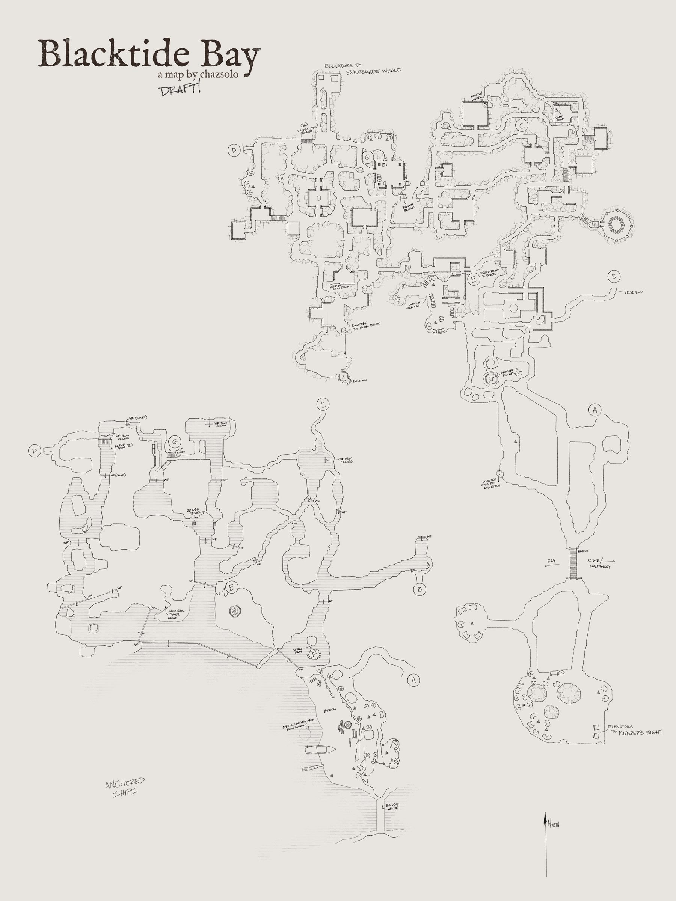

Blacktide Bay
Two options are known to exist for reaching the zone.
Map

Named mobs
Mobs & NPCs (camps by level)
Rows with a level are huntable camps; rows without are usually town NPCs or not yet documented.
| Name | Lvl | Race | Class | Where | Notes |
|---|---|---|---|---|---|
| a gloom widow | 9-11 | Spider | - | - | |
| a gnomish engineer | 11 | Undead | - | - | |
| a gnomish surveyor | 12 | Undead | - | - | |
| a gnomish architect | 13 | Undead | - | - | |
| a fungal elder | - | - | - | - | |
| a fungal farmer | - | - | - | - | |
| a fungal gatherer | - | - | - | - | |
| a fungal harvester | - | - | - | - | |
| a fungal sporecaller | - | - | - | - | |
| a stream fisher | - | Spider | - | - |
Quests
| Quest | Reward | Giver | Min lvl |
|---|---|---|---|
| Example Quest Name | Example Reward | Example Quest Giver | - |
| Example Quest Name | Example Reward | Example Quest Giver | - |
Gear that drops here
| Slot | Item | Key stats (wiki) | How to get | Lvl | Classes |
|---|---|---|---|---|---|
| Primary, Secondary | Cracked Staff | DMG 6 / DLY 33 | Drop: A rotting skeleton (lvl 1) — Night Harbor, Noob Yard Drop: a risen skeleton (lvl 13) — Night Harbor, Crypt (Night) Drop: an ashira lookout (lvl -) — Sungreet Strand, - Drop: an ashira warrior (lvl 6-7) — Sungreet Strand, - | 1 | All classes |
| Primary, Secondary | Rusty Axe | DMG 6 / DLY 42 | Drop: A skeletal warrior (lvl 4 - 11) — Tomb of the Last Wyrmsbane, - Drop: A skeletal cleric (lvl -) — Tomb of the Last Wyrmsbane, - Drop: A skeletal fighter (lvl 3 - 10) — Tomb of the Last Wyrmsbane, - Drop: a skeletal priest (lvl -) — Tomb of the Last Wyrmsbane, - | 1 | BST FTR INQ PAL RNG SHD SPB |
| Primary | Rusty Battle Axe | DMG 10 / DLY 54 | Drop: A rotting skeleton (lvl 1) — Night Harbor, Noob Yard Drop: an ashira warrior (lvl -) — Night Harbor, Noob Yard Drop: A skeletal warrior (lvl 4 - 11) — Tomb of the Last Wyrmsbane, - Drop: a skeletal deacon (lvl -) — Tomb of the Last Wyrmsbane, - | 1 | BST FTR INQ PAL SHD |
| Primary, Secondary | Rusty Dagger | DMG 4 / DLY 24 | Vendor: A scrap dealer — Evershade Weald; A used weapons dealer — Night Harbor, Shallow Shoals; Evershade Weald Drop: an ashira warrior (lvl 6-7) — Sungreet Strand, - Drop: a Bloodynose quarreler (lvl ~8-10) — Sungreet Strand, Tel Ekir Goblin Entrance Drop: a sullen farmhand (lvl unconfirmed) — Sungreet Strand | 1 | ARC BRD BST ELE ENC FTR INQ NEC RNG ROG SHD SHM SPB WIZ |
| Primary | Rusty Great Scythe | DMG 8 / DLY 46 | Drop: A rotting skeleton (lvl 1) — Night Harbor, Noob Yard Drop: a market peddler (lvl unconfirmed) — Night Harbor Drop: A skeletal warrior (lvl 4 - 11) — Tomb of the Last Wyrmsbane, - Drop: a skeletal monk (lvl -) — Tomb of the Last Wyrmsbane, - | 1 | BST DRU FTR INQ NEC RNG SHD SPB |
| Primary | Rusty Greatsword | DMG 9 / DLY 50 | Drop: a skeleton (lvl unconfirmed) — Shaded Dunes Drop: a stumbling zombie (lvl unconfirmed) — Shaded Dunes Drop: a bandit (lvl 10-13) — Shaded Dunes, - Drop: a smuggler (lvl unconfirmed) — Shaded Dunes | 1 | ARC BRD BST FTR INQ PAL RNG SHD SPB |
| Primary | Rusty Long Spear | DMG 9 / DLY 48 | Drop: an ashira warrior (lvl 6-7) — Sungreet Strand, - Drop: a Bloodynose quarreler (lvl ~8-10) — Sungreet Strand, Tel Ekir Goblin Entrance Drop: an ashira lookout (lvl -) — Sungreet Strand, - Drop: an ashira shaman (lvl -) — Sungreet Strand, - | 1 | ARC BRD BST FTR INQ RNG ROG SHD SHM |
| Primary, Secondary | Rusty Longsword | DMG 6 / DLY 38 | Drop: an ashira shaman (lvl -) — Sungreet Strand, - Drop: an ashira warrior (lvl 6-7) — Sungreet Strand, - Drop: a Bloodynose quarreler (lvl ~8-10) — Sungreet Strand, Tel Ekir Goblin Entrance Drop: an ashira lookout (lvl -) — Sungreet Strand, - | 1 | ARC BRD BST FTR INQ PAL RNG ROG SHD SPB WIZ |
| Primary, Secondary | Rusty Mace | DMG 6 / DLY 40 | Vendor: A scrap dealer — Evershade Weald; A used weapons dealer — Night Harbor, Shallow Shoals; Evershade Weald Drop: an ashira lookout (lvl -) — Sungreet Strand, - Drop: an ashira shaman (lvl -) — Sungreet Strand, - Drop: a Bloodynose quarreler (lvl ~8-10) — Sungreet Strand, Tel Ekir Goblin Entrance | 1 | BRD BST CLR DRU FTR INQ MNK PAL RNG ROG SHD SHM SPB |
| Primary | Rusty Maul | DMG 10 / DLY 52 | Drop: A skeletal cavalier (lvl 6 - 10) — Tomb of the Last Wyrmsbane, - Drop: A skeletal fighter (lvl 3 - 10) — Tomb of the Last Wyrmsbane, - Drop: a skeletal deacon (lvl -) — Tomb of the Last Wyrmsbane, - Drop: a skeletal warrior (lvl 4 - 11) — Tomb of the Last Wyrmsbane, - | 1 | BRD BST CLR DRU FTR INQ MNK PAL RNG ROG SHD SHM SPB |
| Primary, Secondary | Rusty Scimitar | DMG 5 / DLY 36 | Drop: A rotting skeleton (lvl 1) — Night Harbor, Noob Yard Drop: a goblin troublemaker (lvl 9) — Night Harbor, Docks Drop: a stumbling zombie (lvl unconfirmed) — Shaded Dunes Drop: a skeleton (lvl unconfirmed) — Shaded Dunes | 1 | ARC BRD BST DRU FTR INQ PAL RNG ROG SHD SPB WIZ |
| Primary, Secondary | Rusty Scythe | DMG 4 / DLY 28 | Drop: a skeleton (lvl unconfirmed) — Shaded Dunes Drop: a bandit (lvl 10-13) — Shaded Dunes, - Drop: an ashira warrior (lvl -) — Shaded Dunes, - Drop: a wererat (lvl unconfirmed) — Shaded Dunes | 1 | BST DRU FTR INQ NEC RNG SHD SPB |
| Primary, Secondary | Rusty Shortsword | DMG 4 / DLY 26 | Vendor: A scrap dealer — Evershade Weald; A used weapons dealer — Night Harbor, Shallow Shoals; Evershade Weald Drop: an ashira warrior (lvl 6-7) — Sungreet Strand, - Drop: an ashira lookout (lvl -) — Sungreet Strand, - Drop: a hired thug (lvl 9-10) — Sungreet Strand, Ameen Farm | 1 | ARC BRD BST FTR INQ PAL RNG ROG SHD SHM SPB WIZ |
| Primary, Secondary | Rusty Spear | DMG 5 / DLY 34 | Vendor: A scrap dealer — Evershade Weald; Evershade Weald; a scrap dealer Drop: an ashira warrior (lvl 6-7) — Sungreet Strand, - Drop: an ashira lookout (lvl -) — Sungreet Strand, - Drop: a rotting skeleton (lvl unconfirmed) — Sungreet Strand | 1 | ARC BRD BST FTR INQ RNG ROG SHD SHM |
| Secondary | Rusty Tower Shield | AC 4 | Drop: an ashira lookout (lvl -) — Sungreet Strand, - Drop: a Bloodynose quarreler (lvl ~8-10) — Sungreet Strand, Tel Ekir Goblin Entrance Drop: an ashira warrior (lvl 6-7) — Sungreet Strand, - Drop: a Bloodynose fumer (lvl ~8-10) — Sungreet Strand, Tel Ekir Goblin Entrance | 1 | FTR INQ PAL SHD |
| Primary, Secondary | Rusty Trident | DMG 5 / DLY 32 | Drop: an ashira lookout (lvl -) — Sungreet Strand, - Drop: an ashira warrior (lvl 6-7) — Sungreet Strand, - Drop: a Bloodynose quarreler (lvl ~8-10) — Sungreet Strand, Tel Ekir Goblin Entrance Drop: an ashira shaman (lvl -) — Sungreet Strand, - | 1 | ARC BRD BST FTR INQ RNG ROG SHD SHM |
| Primary | Rusty War Lance | DMG 9 / DLY 48 | Drop: an ashira warrior (lvl 6-7) — Sungreet Strand, - Drop: a hired thug (lvl 9-10) — Sungreet Strand, Ameen Farm Drop: a rotting skeleton (lvl unconfirmed) — Sungreet Strand Drop: an ashira lookout (lvl -) — Sungreet Strand, - | 1 | FTR INQ PAL SHD |
| Primary, Secondary | Rusty Warhammer | DMG 4 / DLY 30 | Drop: A skeletal fighter (lvl 3 - 10) — Tomb of the Last Wyrmsbane, - Drop: A skeletal marksman (lvl -) — Tomb of the Last Wyrmsbane, - Drop: a skeletal warrior (lvl 4 - 11) — Tomb of the Last Wyrmsbane, - Drop: a skeletal monk (lvl -) — Tomb of the Last Wyrmsbane, - | 1 | BRD BST CLR DRU FTR INQ MNK PAL RNG ROG SHD SHM SPB |
| Waist | Tattered Cloth Belt | AC 1 | Drop: A rotting skeleton (lvl 1) — Night Harbor, Noob Yard Drop: a cackling skeleton (lvl 15) — Night Harbor, Crypt (Night) Drop: a goblin troublemaker (lvl 9) — Night Harbor, Docks Drop: an ashira scout (lvl 2) — Night Harbor, Noob Yard | 1 | All classes |
| Feet | Tattered Cloth Boots | AC 1 | Drop: A rotting skeleton (lvl 1) — Night Harbor, Noob Yard Drop: an ashira scout (lvl 2) — Night Harbor, Noob Yard Drop: a goblin drunk (lvl -) — Night Harbor, Docks Drop: a goblin squatter (lvl 10) — Night Harbor, Docks | 1 | All classes |
| Wrist | Tattered Cloth Bracer | AC 1 | Drop: A skeletal fighter (lvl 3 - 10) — Tomb of the Last Wyrmsbane, - Drop: A skeletal warrior (lvl 4 - 11) — Tomb of the Last Wyrmsbane, - Drop: A skeletal cleric (lvl -) — Tomb of the Last Wyrmsbane, - Drop: A skeletal knight (lvl -) — Tomb of the Last Wyrmsbane, - | 1 | All classes |
| Head | Tattered Cloth Cap | AC 1 | Drop: A rotting skeleton (lvl 1) — Night Harbor, Noob Yard Drop: a goblin squatter (lvl 10) — Night Harbor, Docks Drop: a goblin troublemaker (lvl 9) — Night Harbor, Docks Drop: a goblin drunk (lvl -) — Night Harbor, Docks | 1 | All classes |
| Back | Tattered Cloth Cape | AC 1 | Drop: A rotting skeleton (lvl 1) — Night Harbor, Noob Yard Drop: a risen skeleton (lvl 13) — Night Harbor, Crypt (Night) Drop: a cackling skeleton (lvl 15) — Night Harbor, Crypt (Night) Drop: a goblin drunk (lvl -) — Night Harbor, Docks | 1 | All classes |
| Hands | Tattered Cloth Gloves | AC 1 | Drop: A rotting skeleton (lvl 1) — Night Harbor, Noob Yard Drop: a begrudging farmer (lvl unconfirmed) — Night Harbor Drop: a stumbling skeleton (lvl 14) — Night Harbor, Crypt (Night) Drop: a goblin drunk (lvl -) — Night Harbor, Docks | 1 | All classes |
| Neck | Tattered Cloth Gorget | AC 1 | Drop: A rotting skeleton (lvl 1) — Night Harbor, Noob Yard Drop: a goblin drunk (lvl -) — Night Harbor, Docks Drop: a goblin troublemaker (lvl 9) — Night Harbor, Docks Drop: a goblin squatter (lvl 10) — Night Harbor, Docks | 1 | All classes |
| Shoulders | Tattered Cloth Mantle | AC 1 | Drop: A skeletal fighter (lvl 3 - 10) — Tomb of the Last Wyrmsbane, - Drop: A skeletal monk (lvl -) — Tomb of the Last Wyrmsbane, - Drop: A skeletal warrior (lvl 4 - 11) — Tomb of the Last Wyrmsbane, - Drop: A skeletal defender (lvl -) — Tomb of the Last Wyrmsbane, - | 1 | All classes |
| Legs | Tattered Cloth Pantaloons | AC 1 | Drop: A skeletal fighter (lvl 3 - 10) — Tomb of the Last Wyrmsbane, - Drop: A skeletal warrior (lvl 4 - 11) — Tomb of the Last Wyrmsbane, - Drop: A skeletal defender (lvl -) — Tomb of the Last Wyrmsbane, - Drop: A skeletal cavalier (lvl 6 - 10) — Tomb of the Last Wyrmsbane, - | 1 | All classes |
| Chest | Tattered Cloth Robe | AC 2 | Drop: A rotting skeleton (lvl 1) — Night Harbor, Noob Yard Drop: a cackling skeleton (lvl 15) — Night Harbor, Crypt (Night) Drop: a goblin squatter (lvl 10) — Night Harbor, Docks Drop: a goblin gambler (lvl -) — Night Harbor, Docks | 1 | ELE ENC NEC WIZ |
| Shirt | Tattered Cloth Shirt | no stats listed on wiki | Drop: A rotting skeleton (lvl 1) — Night Harbor, Noob Yard Drop: a stumbling skeleton (lvl 14) — Night Harbor, Crypt (Night) Drop: a cackling skeleton (lvl 15) — Night Harbor, Crypt (Night) Drop: a goblin troublemaker (lvl 9) — Night Harbor, Docks | 1 | All classes |
| Chest | Tattered Cloth Tunic | AC 2 | Drop: A skeletal cleric (lvl -) — Tomb of the Last Wyrmsbane, - Drop: A skeletal fighter (lvl 3 - 10) — Tomb of the Last Wyrmsbane, - Drop: A skeletal warrior (lvl 4 - 11) — Tomb of the Last Wyrmsbane, - Drop: A skeletal priest (lvl -) — Tomb of the Last Wyrmsbane, - | 1 | All classes |
| Face | Tattered Cloth Veil | AC 1 | Drop: A rotting skeleton (lvl 1) — Night Harbor, Noob Yard Drop: a cackling skeleton (lvl 15) — Night Harbor, Crypt (Night) Drop: a goblin drunk (lvl -) — Night Harbor, Docks Drop: a goblin squatter (lvl 10) — Night Harbor, Docks | 1 | All classes |
| Primary, Secondary | Torch | Effect: Torch (Passive. Must Equip. Level: 1) | Quest: Pests at the Farm (Farmer Ammar, Night Harbor, min lvl 1) Vendor: A goods merchant — Night Harbor, Shallow Shoals; A greedy halfling — Night Harbor; A shifty elf — Evershade Weald Crafted: Survival (trivial X) Drop: A rotting skeleton (lvl 1) — Night Harbor, Noob Yard | 1 | All classes |
| Secondary | Worn Buckler | AC 2 | Drop: an ashira shaman (lvl -) — Sungreet Strand, - Drop: an ashira lookout (lvl -) — Sungreet Strand, - Drop: an ashira warrior (lvl 6-7) — Sungreet Strand, - Drop: a Bloodynose scarer (lvl ~8-10) — Sungreet Strand, Tel Ekir Goblin Entrance | 1 | BRD BST CLR DRU FTR INQ PAL RNG ROG SHD SHM SPB |
| Primary | Worn Great Staff | DMG 10 / DLY 39 | Drop: an ashira shaman (lvl -) — Sungreet Strand, - Drop: an ashira warrior (lvl 6-7) — Sungreet Strand, - Drop: a Bloodynose quarreler (lvl ~8-10) — Sungreet Strand, Tel Ekir Goblin Entrance Drop: a smarmy hunter (lvl unconfirmed) — Sungreet Strand | 1 | BST CLR DRU ELE ENC FTR MNK NEC PAL SHM SPB WIZ |
| Secondary | Rusty Kite Shield | AC 3 | Drop: an ashira shaman (lvl -) — Sungreet Strand, - Drop: an ashira warrior (lvl 6-7) — Sungreet Strand, - Drop: a Bloodynose scarer (lvl ~8-10) — Sungreet Strand, Tel Ekir Goblin Entrance Drop: a filthy henchman (lvl unconfirmed) — Sungreet Strand | 3 | BRD CLR FTR INQ PAL RNG SHD |
| Waist | Tattered Rawhide Belt | AC 1 | Drop: A skeletal warrior (lvl 4 - 11) — Tomb of the Last Wyrmsbane, - Drop: A skeletal monk (lvl -) — Tomb of the Last Wyrmsbane, - Drop: a skeletal cleric (lvl -) — Tomb of the Last Wyrmsbane, - Drop: a risen zombie (lvl -) — Tomb of the Last Wyrmsbane, - | 3 | ARC BRD BST CLR DRU FTR INQ MNK PAL RNG ROG SHD SHM SPB |
| Back | Tattered Rawhide Cloak | AC 1 | Drop: A skeletal marksman (lvl -) — Tomb of the Last Wyrmsbane, - Drop: A skeletal warrior (lvl 4 - 11) — Tomb of the Last Wyrmsbane, - Drop: A skeletal cavalier (lvl 6 - 10) — Tomb of the Last Wyrmsbane, - Drop: A skeletal cleric (lvl -) — Tomb of the Last Wyrmsbane, - | 3 | ARC BRD BST CLR DRU FTR INQ MNK PAL RNG ROG SHD SHM SPB |
| Finger | Ring of the Pauper | AC 1, HP +5 | Drop: a black widow (lvl 4-5) — Evershade Weald, - Drop: a gloom widow (lvl 9-11) — Blacktide Bay, - Drop: a cobweaver hatchling (lvl -) — Night Harbor, Abandoned Boatwright's House Drop: a cobweaver spider (lvl unconfirmed) — Night Harbor | 4 | All classes |
| Feet | Tattered Rawhide Boots | AC 2 | Drop: A skeletal warrior (lvl 4 - 11) — Tomb of the Last Wyrmsbane, - Drop: A skeletal cleric (lvl -) — Tomb of the Last Wyrmsbane, - Drop: A skeletal archer (lvl -) — Tomb of the Last Wyrmsbane, - Drop: A skeletal cavalier (lvl 6 - 10) — Tomb of the Last Wyrmsbane, - | 4 | ARC BRD BST CLR DRU FTR INQ MNK PAL RNG ROG SHD SHM SPB |
| Wrist | Tattered Rawhide Bracer | AC 2 | Drop: A skeletal warrior (lvl 4 - 11) — Tomb of the Last Wyrmsbane, - Drop: A skeletal defender (lvl -) — Tomb of the Last Wyrmsbane, - Drop: A skeletal marksman (lvl -) — Tomb of the Last Wyrmsbane, - Drop: a skeletal priest (lvl -) — Tomb of the Last Wyrmsbane, - | 4 | ARC BRD BST CLR DRU FTR INQ MNK PAL RNG ROG SHD SHM SPB |
| Head | Tattered Rawhide Cap | AC 2 | Drop: A skeletal warrior (lvl 4 - 11) — Tomb of the Last Wyrmsbane, - Drop: A skeletal marksman (lvl -) — Tomb of the Last Wyrmsbane, - Drop: a skeletal knight (lvl -) — Tomb of the Last Wyrmsbane, - Drop: a risen zombie (lvl -) — Tomb of the Last Wyrmsbane, - | 4 | ARC BRD BST CLR DRU FTR INQ MNK PAL RNG ROG SHD SHM SPB |
| Hands | Tattered Rawhide Gloves | AC 2 | Drop: A skeletal warrior (lvl 4 - 11) — Tomb of the Last Wyrmsbane, - Drop: A skeletal priest (lvl -) — Tomb of the Last Wyrmsbane, - Drop: A skeletal marksman (lvl -) — Tomb of the Last Wyrmsbane, - Drop: a skeletal monk (lvl -) — Tomb of the Last Wyrmsbane, - | 4 | ARC BRD BST CLR DRU FTR INQ MNK PAL RNG ROG SHD SHM SPB |
| Neck | Tattered Rawhide Gorget | AC 1 | Drop: a skeleton (lvl unconfirmed) — Sungreet Strand Drop: an ashira warrior (lvl 6-7) — Sungreet Strand, - Drop: a Bloodynose quarreler (lvl ~8-10) — Sungreet Strand, Tel Ekir Goblin Entrance Drop: a hired thug (lvl 9-10) — Sungreet Strand, Ameen Farm | 4 | ARC BRD BST CLR DRU FTR INQ MNK PAL RNG ROG SHD SHM SPB |
| Legs | Tattered Rawhide Leggings | AC 2 | Drop: A skeletal warrior (lvl 4 - 11) — Tomb of the Last Wyrmsbane, - Drop: A skeletal monk (lvl -) — Tomb of the Last Wyrmsbane, - Drop: A skeletal defender (lvl -) — Tomb of the Last Wyrmsbane, - Drop: A skeletal priest (lvl -) — Tomb of the Last Wyrmsbane, - | 4 | ARC BRD BST CLR DRU FTR INQ MNK PAL RNG ROG SHD SHM SPB |
| Face | Tattered Rawhide Mask | AC 1 | Drop: A skeletal marksman (lvl -) — Tomb of the Last Wyrmsbane, - Drop: A skeletal warrior (lvl 4 - 11) — Tomb of the Last Wyrmsbane, - Drop: A skeletal cavalier (lvl 6 - 10) — Tomb of the Last Wyrmsbane, - Drop: a skeletal monk (lvl -) — Tomb of the Last Wyrmsbane, - | 4 | ARC BRD BST CLR DRU FTR INQ MNK PAL RNG ROG SHD SHM SPB |
| Shoulders | Tattered Rawhide Shoulderpads | AC 2 | Drop: A skeletal warrior (lvl 4 - 11) — Tomb of the Last Wyrmsbane, - Drop: A risen zombie (lvl -) — Tomb of the Last Wyrmsbane, - Drop: A skeletal marksman (lvl -) — Tomb of the Last Wyrmsbane, - Drop: A skeletal priest (lvl -) — Tomb of the Last Wyrmsbane, - | 4 | ARC BRD BST CLR DRU FTR INQ MNK PAL RNG ROG SHD SHM SPB |
| Chest | Tattered Rawhide Tunic | AC 3 | Drop: A skeletal marksman (lvl -) — Tomb of the Last Wyrmsbane, - Drop: A skeletal warrior (lvl 4 - 11) — Tomb of the Last Wyrmsbane, - Drop: a skeletal vicar (lvl -) — Tomb of the Last Wyrmsbane, - Drop: a risen zombie (lvl -) — Tomb of the Last Wyrmsbane, - | 4 | ARC BRD BST CLR DRU FTR INQ MNK PAL RNG ROG SHD SHM SPB |
| Shirt | Tattered Rawhide Vest | no stats listed on wiki | Drop: A skeletal warrior (lvl 4 - 11) — Tomb of the Last Wyrmsbane, - Drop: A skeletal knight (lvl -) — Tomb of the Last Wyrmsbane, - Drop: a skeletal priest (lvl -) — Tomb of the Last Wyrmsbane, - Drop: a skeletal defender (lvl -) — Tomb of the Last Wyrmsbane, - | 4 | ARC BRD BST CLR DRU FTR INQ MNK PAL RNG ROG SHD SHM SPB |
| Primary, Secondary | Corroded Bronze Axe | DMG 9 / DLY 42 | Drop: a bulky bandit (lvl 26) — Scarwood, - Drop: a risen commander (lvl -) — Shaded Dunes, Ancient Crypt Entrance Drop: an ashira warrior (lvl 6-7) — Sungreet Strand, - Drop: an ashira preserver (lvl -) — Sungreet Strand, - | 6 | BST FTR INQ PAL RNG SHD SPB |
| Feet | Corroded Bronze Chain Boots | AC 5 | Drop: an ashira mystic (lvl -) — Tel Ekir, - Drop: a Bloodynose sergeant (lvl 15) — Tel Ekir, - Drop: a Bloodchain guard (lvl unconfirmed) — Blacktide Bay Drop: a skeletal guard (lvl ~12-15) — Ancient Crypt, - | 6 | BRD CLR FTR INQ PAL RNG ROG SHD SHM |
| Shoulders | Corroded Bronze Chain Shoulderguards | AC 8 | Drop: a Sangrel striker (lvl 18-22) — Keeper's Bight, - Drop: a poacher pathfinder (lvl 28-30) — Keeper's Bight, Poacher Camp, Bear Cave Drop: a Sangrel hunter (lvl 18-22) — Keeper's Bight, - Drop: a Blacktide brute (lvl 25) — Keeper's Bight, - | 6 | BRD CLR FTR INQ PAL RNG ROG SHD SHM |
| Primary, Secondary | Corroded Bronze Dagger | DMG 5 / DLY 24 | Drop: an ashira ain guard (lvl -) — Tel Ekir, - Drop: an ashira naturalist (lvl -) — Tel Ekir, - Drop: a skeletal acolyte (lvl 17) — Ancient Crypt, - Drop: a skeletal soldier (lvl 17) — Ancient Crypt, - | 6 | ARC BRD BST ELE ENC FTR NEC RNG ROG SHD SHM SPB WIZ |
| Secondary | Corroded Bronze Kite Shield | AC 8 | Drop: a Sangrel striker (lvl 18-22) — Keeper's Bight, - Drop: a mercenary magus (lvl unconfirmed) — Keeper's Bight Drop: a poacher pathfinder (lvl 28-30) — Keeper's Bight, Poacher Camp, Bear Cave Drop: a Bloodynose frightener (lvl ~15-18) — Tel Ekir, - | 6 | BRD FTR INQ PAL RNG SHD |
| Chest | Corroded Bronze Plate Breastplate | AC 11 | Drop: a Sangrel striker (lvl 18-22) — Keeper's Bight, - Drop: a Muggrah brawler (lvl 20+) — Sungreet Strand, Muggrah Mountain Camp Drop: an ashira warrior (lvl 6-7) — Sungreet Strand, - Drop: a gruff farmhand (lvl unconfirmed) — Sungreet Strand | 6 | CLR FTR INQ PAL SHD |
| Hands | Corroded Bronze Plate Gauntlets | AC 8 | Drop: an ashira ain guard (lvl -) — Tel Ekir, - Drop: a stumbling skeleton (lvl 14) — Night Harbor, Crypt (Night) Drop: a river pirate (lvl unconfirmed) — Night Harbor Drop: a mercenary (lvl unconfirmed) — Night Harbor | 6 | CLR FTR INQ PAL SHD |
| Head | Corroded Bronze Plate Helm | AC 9 | Drop: a bulky bandit (lvl 26) — Scarwood, - Drop: a ghastly cook (lvl 16) — Ancient Crypt, - Drop: a restless skeleton (lvl 18-21) — Fallen Pass, - Drop: a dusty skeleton (lvl -) — Fallen Pass, - | 6 | CLR FTR INQ PAL SHD |
| Primary, Secondary | Corroded Bronze Scimitar | DMG 7 / DLY 36 | Drop: an ashira ain guard (lvl -) — Tel Ekir, - Drop: an ashira naturalist (lvl -) — Tel Ekir, - Drop: a Bloodynose witch doctor (lvl 15) — Tel Ekir, - Drop: a Bloodynose frightener (lvl ~15-18) — Tel Ekir, - | 6 | ARC BRD BST DRU FTR INQ PAL RNG ROG SHD SPB WIZ |
| Primary, Secondary | Corroded Bronze Scythe | DMG 6 / DLY 28 | Drop: a skeletal soldier (lvl 17) — Ancient Crypt, - Drop: a fallen sentinel (lvl 19) — Ancient Crypt, - Drop: a Muggrah brawler (lvl 20+) — Sungreet Strand, Muggrah Mountain Camp Drop: an ashira warrior (lvl 6-7) — Sungreet Strand, - | 6 | BST DRU FTR INQ NEC RNG SHD SPB |
| Primary, Secondary | Corroded Bronze Shortsword | DMG 5 / DLY 26 | Drop: an ashira ain guard (lvl -) — Tel Ekir, - Drop: an ashira alpha (lvl ~14) — Tel Ekir, - Drop: an ashira naturalist (lvl -) — Tel Ekir, - Drop: a Bloodynose frightener (lvl ~15-18) — Tel Ekir, - | 6 | ARC BRD BST FTR INQ PAL RNG ROG SHD SPB WIZ |
| Secondary | Corroded Bronze Tower Shield | AC 10 | Drop: a Bloodynose frightener (lvl ~15-18) — Tel Ekir, - Drop: an ashira naturalist (lvl -) — Tel Ekir, - Drop: a Bloodynose sergeant (lvl 15) — Tel Ekir, - Drop: a dusty skeleton (lvl -) — Fallen Pass, - | 6 | FTR INQ PAL SHD |
| Primary, Secondary | Cracked Fine Wood Staff | DMG 7 / DLY 33 | Drop: an ashira ain guard (lvl -) — Tel Ekir, - Drop: an ashira spearthrower (lvl -) — Tel Ekir, - Drop: a Bloodynose frightener (lvl ~15-18) — Tel Ekir, - Drop: an ashira naturalist (lvl -) — Tel Ekir, - | 6 | All classes |
| Waist | Tattered Hide Belt | AC 5 | Drop: an ashira naturalist (lvl -) — Tel Ekir, - Drop: an ashira elite guard (lvl ~27) — Tel Ekir, - Drop: an ashira spearthrower (lvl -) — Tel Ekir, - Drop: a Sangrel grappler (lvl 18-22) — Keeper's Bight, - | 6 | ARC BRD BST CLR DRU FTR INQ MNK PAL RNG ROG SHD SHM SPB |
| Wrist | Tattered Hide Bracer | AC 3 | Drop: a zealot (lvl unconfirmed) — Keeper's Bight Drop: a poacher pathfinder (lvl 28-30) — Keeper's Bight, Poacher Camp, Bear Cave Drop: a Sangrel striker (lvl 18-22) — Keeper's Bight, - Drop: a Blacktide brute (lvl unconfirmed) — Blacktide Bay | 6 | ARC BRD BST CLR DRU FTR INQ MNK PAL RNG ROG SHD SHM SPB |
| Head | Tattered Hide Cap | AC 4 | Drop: Mirrielle Bromm (lvl unconfirmed) — Fallen Pass Drop: a dusty skeleton (lvl -) — Fallen Pass, - Drop: a restless ghoul (lvl -) — Fallen Pass, - Drop: a restless skeleton (lvl 18-21) — Fallen Pass, - | 6 | ARC BRD BST CLR DRU FTR INQ MNK PAL RNG ROG SHD SHM SPB |
| Back | Tattered Hide Cloak | AC 2 | Drop: a Bloodchain sentry (lvl unconfirmed) — Blacktide Bay Drop: a Blacktide brute (lvl unconfirmed) — Blacktide Bay Drop: a shady farmer (lvl -) — Keeper's Bight, Farms, south of Penshaw Drop: a Blacktide raider (lvl 23-24) — Keeper's Bight, - | 6 | ARC BRD BST CLR DRU FTR INQ MNK PAL RNG ROG SHD SHM SPB |
| Neck | Tattered Hide Gorget | AC 2 | Drop: an ashira spearthrower (lvl -) — Tel Ekir, - Drop: a Bloodynose captain (lvl 16) — Tel Ekir, - Drop: an ashira naturalist (lvl -) — Tel Ekir, - Drop: a Blacktide raider (lvl unconfirmed) — Blacktide Bay | 6 | ARC BRD BST CLR DRU FTR INQ MNK PAL RNG ROG SHD SHM SPB |
| Legs | Tattered Hide Leggings | AC 6 | Drop: an ashira alpha (lvl ~14) — Tel Ekir, - Drop: an ashira bruiser (lvl -) — Tel Ekir, - Drop: an ashira drunk (lvl -) — Tel Ekir, - Drop: an ashira ain guard (lvl -) — Tel Ekir, - | 6 | ARC BRD BST CLR DRU FTR INQ MNK PAL RNG ROG SHD SHM SPB |
| Face | Tattered Hide Mask | AC 2 | Drop: an ashira fisher (lvl -) — Tel Ekir, - Drop: an ashira adept (lvl -) — Tel Ekir, - Drop: an ashira stalker (lvl -) — Tel Ekir, - Drop: an ashira elite guard (lvl ~27) — Tel Ekir, - | 6 | ARC BRD BST CLR DRU FTR INQ MNK PAL RNG ROG SHD SHM SPB |
| Chest | Tattered Hide Tunic | AC 7 | Drop: a shady farmer (lvl -) — Keeper's Bight, Farms, south of Penshaw Drop: a poacher pathfinder (lvl 28-30) — Keeper's Bight, Poacher Camp, Bear Cave Drop: a Sangrel striker (lvl 18-22) — Keeper's Bight, - Drop: a bulky bandit (lvl 26) — Scarwood, - | 6 | ARC BRD BST CLR DRU FTR INQ MNK PAL RNG ROG SHD SHM SPB |
| Feet | Tattered Wool Boots | AC 2 | Drop: an ashira ain guard (lvl -) — Tel Ekir, - Named drop: Librarian Gallier (lvl -) — Ancient Crypt, - Drop: a skeletal guard (lvl ~12-15) — Ancient Crypt, - Drop: a skeletal soldier (lvl 17) — Ancient Crypt, - | 6 | All classes |
| Head | Tattered Wool Cap | AC 3 | Drop: a Bloodchain sentry (lvl unconfirmed) — Blacktide Bay Drop: a Blacktide bowman (lvl unconfirmed) — Blacktide Bay Drop: an ashira spearthrower (lvl -) — Tel Ekir, - Drop: an ashira bruiser (lvl -) — Tel Ekir, - | 6 | All classes |
| Back | Tattered Wool Cape | AC 1 | Drop: an ashira ain guard (lvl -) — Tel Ekir, - Drop: a Bloodynose frightener (lvl ~15-18) — Tel Ekir, - Drop: an ashira hierophant (lvl -) — Tel Ekir, - Drop: a Bloodynose captain (lvl 16) — Tel Ekir, - | 6 | All classes |
| Neck | Tattered Wool Gorget | AC 3 | Drop: a Bloodynose captain (lvl 16) — Tel Ekir, - Drop: an ashira luminary (lvl -) — Tel Ekir, - Drop: an ashira bruiser (lvl -) — Tel Ekir, - Drop: an ashira ain guard (lvl -) — Tel Ekir, - | 6 | All classes |
| Legs | Tattered Wool Pantaloons | AC 3 | Drop: an ashira ain guard (lvl -) — Tel Ekir, - Drop: a Bloodynose frightener (lvl ~15-18) — Tel Ekir, - Named drop: General Overlord Bloodynose (lvl 20+) — Tel Ekir, - Drop: an ashira huntmaster (lvl 16-18) — Tel Ekir, - | 6 | All classes |
| Chest | Tattered Wool Robe | AC 4 | Drop: a Bloodynose frightener (lvl ~15-18) — Tel Ekir, - Drop: an ashira alpha (lvl ~14) — Tel Ekir, - Drop: a skeletal guard (lvl ~12-15) — Ancient Crypt, - Drop: a ghastly cook (lvl 16) — Ancient Crypt, - | 6 | ELE ENC NEC WIZ |
| Primary | Worn Fine Wood Great Staff | DMG 12 / DLY 46 | Drop: a Blacktide brute (lvl unconfirmed) — Blacktide Bay Drop: a bandit (lvl 26) — Scarwood, - Drop: a bulky bandit (lvl 26) — Scarwood, - Drop: a ghastly cook (lvl 16) — Ancient Crypt, - | 6 | BST CLR DRU ELE ENC FTR MNK NEC PAL SHM SPB WIZ |
| Secondary | Gloomguard | AC 12, STR +3, STA +1, DEX +1 | Named drop: A gloom widow matron (lvl 11) — Blacktide Bay, - | 11 | BRD FTR INQ PAL RNG SHD |
| Shoulders | Shadowweb Shoulders | AC 12, STR +2, HP +10 | Named drop: a gloom widow matron (lvl 11) — Blacktide Bay, - | 11 | CLR FTR INQ PAL SHD |
| Wrist | Widow's Silk | AC 5, WIS +3, HP +5 | Named drop: a gloom widow matron (lvl 11) — Blacktide Bay, - | 11 | ARC BRD BST CLR DRU FTR INQ MNK PAL ROG SHD SHM SPB |
| Wrist | Corroded Bronze Plate Bracer | AC 7 | Drop: a burning skeleton (lvl -) — Ancient Crypt, - Drop: a skeletal soldier (lvl 17) — Ancient Crypt, - Drop: a skeletal guard (lvl ~12-15) — Ancient Crypt, - Drop: a dusty skeleton (lvl -) — Fallen Pass, - | 12 | CLR FTR INQ PAL SHD |
| Chest | Tarweave Cuirass | AC 16, STR +1, WIS +3 | Named drop: a net weaver (lvl 12) — Blacktide Bay, - | 12 | CLR FTR INQ PAL SHD |
| Hands | Beastclaw Gauntlets | AC 10, STR +2, STA +2, DEX +1 | Named drop: Gurowl, The Beast (lvl 14) — Blacktide Bay, - | 14 | BRD CLR FTR INQ PAL RNG ROG SHD SHM |
| Legs | Beastmaster's Leggings | AC 11, STR +3, DEX +3 | Named drop: Gurowl, The Beast (lvl 14) — Blacktide Bay, - | 14 | ARC BRD BST CLR DRU FTR INQ MNK PAL RNG ROG SHD SHM SPB |
| Feet | Beaststalker's Treads | AC 11, INT +1, HP +5 | Named drop: Gurowl, The Beast (lvl 14) — Blacktide Bay, - | 14 | CLR FTR INQ PAL SHD |
| Hands | Clockwork Gauntlets | AC 9, STA +1, WIS +2 | Named drop: Frimbus Darplefen (lvl 14) — Blacktide Bay, - | 14 | BRD CLR FTR INQ PAL RNG ROG SHD SHM |
| Neck | Darplefen Torc | STA +2, CHA +1, HP +5 | Named drop: Frimbus Darplefen (lvl 14) — Blacktide Bay, - | 14 | All classes |
| Hands | Fellstone Gauntlets | AC 10, STR +1, STA +3 | Named drop: a Fellstone ritualist (lvl 14) — Blacktide Bay, - | 14 | BRD CLR FTR INQ PAL RNG ROG SHD SHM |
| Feet | Gnomish Stanchion Boots | AC 10, STR +1, WIS +2, HP +5 | Named drop: Frimbus Darplefen (lvl 14) — Blacktide Bay, - | 14 | CLR FTR INQ PAL SHD |
| Shoulders | Rawhide Yoke | AC 9, WIS +2, HP +10 | Named drop: Gurowl, The Beast (lvl 14) — Blacktide Bay, - Drop: Gurowl the Beast (lvl unconfirmed) — Blacktide Bay | 14 | ARC BRD BST CLR DRU FTR INQ MNK PAL RNG ROG SHD SHM SPB |
| Head | Ritualist's Coif | AC 10, WIS +3, Mana +15 | Named drop: a Fellstone ritualist (lvl 14) — Blacktide Bay, - | 14 | ARC BRD BST CLR DRU FTR INQ MNK PAL RNG ROG SHD SHM SPB |
| Feet | Ritualist's Sabatons | AC 11, STA +2, WIS +3 | Named drop: a Fellstone ritualist (lvl 14) — Blacktide Bay, - | 14 | CLR FTR INQ PAL SHD |
| Ear | Ritualspur Drops | STA +2, CHA +1, Mana +5 | Named drop: a Fellstone ritualist (lvl 14) — Blacktide Bay, - | 14 | All classes |
| Legs | Skeletal Plates | AC 15, STA +1, INT +3 | Named drop: Frimbus Darplefen (lvl 14) — Blacktide Bay, - | 14 | CLR FTR INQ PAL SHD |
| Ear | Tuskhook Earrings | STA +1, WIS +2, Mana +5 | Named drop: Gurowl, The Beast (lvl 14) — Blacktide Bay, - | 14 | BST CLR DRU PAL RNG SHM |
| Chest | Battleworn Cuirass | AC 11, WIS +3, Mana +10 | Named drop: Commander Rursk (lvl 15) — Blacktide Bay, - | 15 | ARC BRD BST CLR DRU FTR INQ MNK PAL RNG ROG SHD SHM SPB |
| Feet | Bloodiron Greaves | AC 12, STR +1, DEX +1 | Named drop: Commander Rursk (lvl 15) — Blacktide Bay, - | 15 | CLR FTR INQ PAL SHD |
| Feet | Bloodiron Sabatons | AC 12, STR +1, STA +1, DEX +2 | Named drop: Commander Rursk (lvl 15) — Blacktide Bay, - | 15 | CLR FTR INQ PAL SHD |
| Hands | Duskswamp Wraps | AC 5, INT +2, HP +10 | Named drop: Commander Rursk (lvl 15) — Blacktide Bay, - | 15 | All classes |
| Primary | Orcish Ritual Staff | DMG 11 / DLY 37, STA +1, WIS +5, HP +5, Mana +5 | Named drop: Commander Rursk (lvl 15) — Blacktide Bay, - | 15 | All classes |
| Primary, Secondary | Rusty Knuckles | DMG 1 / DLY 2, STR +3, DEX +3 | Named drop: Commander Rursk (lvl 15) — Blacktide Bay, - | 15 | MNK |
| Wrist | Tattered Wool Bracer | AC 3 | Drop: an ashira ain guard (lvl -) — Tel Ekir, - Drop: a Bloodynose frightener (lvl ~15-18) — Tel Ekir, - Drop: an ashira mystic (lvl -) — Tel Ekir, - Drop: a skeletal soldier (lvl 17) — Ancient Crypt, - | 15 | All classes |
| Head | Corroded Bronze Chain Coif | AC 7 | Drop: a Sangrel shadowblade (lvl 18-22) — Keeper's Bight, - Drop: a poacher pathfinder (lvl 28-30) — Keeper's Bight, Poacher Camp, Bear Cave Drop: a Sangrel striker (lvl 18-22) — Keeper's Bight, - Drop: an ancient elven fighter (lvl -) — Keeper's Bight, - | 16 | BRD CLR FTR INQ PAL RNG ROG SHD SHM |
| Waist | Corroded Bronze Chain Waistguard | AC 3 | Drop: a Sangrel shadowblade (lvl 18-22) — Keeper's Bight, - Drop: a poacher pathfinder (lvl 28-30) — Keeper's Bight, Poacher Camp, Bear Cave Drop: an ancient elven fighter (lvl -) — Keeper's Bight, - Drop: a Bloodynose stabber (lvl ~16-18) — Tel Ekir, - | 16 | BRD CLR FTR INQ PAL RNG ROG SHD SHM |
| Shirt | Tattered Wool Shirt | no stats listed on wiki | Drop: a skeletal soldier (lvl 17) — Ancient Crypt, - Drop: a skeletal acolyte (lvl 17) — Ancient Crypt, - Drop: a ghastly cook (lvl 16) — Ancient Crypt, - Drop: a fallen sentinel (lvl 19) — Ancient Crypt, - | 16 | All classes |
| Hands | Tattered Hide Gloves | AC 4 | Drop: a bandit (lvl 26) — Scarwood, - Drop: a bulky bandit (lvl 26) — Scarwood, - Drop: an ashira preserver (lvl -) — Sungreet Strand, - Drop: a Muggrah scrapper (lvl 17+) — Sungreet Strand, Muggrah Mountain Camp | 17 | ARC BRD BST CLR DRU FTR INQ MNK PAL RNG ROG SHD SHM SPB |
| Primary | Scourgehammer | DMG 11 / DLY 35, STA +1, WIS +4, Mana +10 | Named drop: Prince Mali'Tik (lvl 18) — Blacktide Bay, - | 18 | BRD BST CLR DRU FTR INQ MNK PAL RNG ROG SHD SHM SPB |
| Shoulders | Skri'Var Silk | AC 7, STA +3, INT +2 | Named drop: Prince Mali'Tik (lvl 18) — Blacktide Bay, - | 18 | All classes |
| Feet | Skri'Var Treads | AC 11, STR +3, HP +15 | Named drop: Prince Mali'Tik (lvl 18) — Blacktide Bay, - | 18 | BRD CLR FTR INQ PAL RNG ROG SHD SHM |
| Secondary | Stillmind | AC 10, WIS +3, HP +10 | Named drop: Prince Mali'Tik (lvl 18) — Blacktide Bay, - | 18 | BRD CLR DRU FTR INQ PAL RNG SHD SHM |
| Shoulders | Verminlord Silks | AC 7, STA +3, INT +2 | Named drop: Prince Mali'Tik (lvl 18) — Blacktide Bay, - | 18 | All classes |
| Neck | Battleworn Clasp | STA +2, WIS +2, Mana +10 | Named drop: Bloodchain Champion (lvl 23) — Blacktide Bay, - | 23 | All classes |
| Hands | Blooded Sage Gloves | AC 7, STA +4, INT +3 | Named drop: Bloodchain Champion (lvl 23) — Blacktide Bay, - | 23 | All classes |
| Range | Bloodmark Token | CHA +3, Mana +15 | Named drop: Bloodchain Champion (lvl 23) — Blacktide Bay, - | 23 | All classes |
| Secondary | Bloodsworn Buckler | AC 13, STA +1, WIS +4, Mana +15 | Named drop: Bloodchain Champion (lvl 23) — Blacktide Bay, - Drop: a Bloodchain champion (lvl unconfirmed) — Blacktide Bay | 23 | BRD CLR DRU FTR INQ PAL RNG SHD SHM |
| Primary | Kroghar's Fury | DMG 17 / DLY 35, STR +6, STA +1, DEX +3 | Named drop: Bloodchain Champion (lvl 23) — Blacktide Bay, - | 23 | ARC BRD BST FTR INQ PAL RNG SHD SPB |
| Wrist | Brawler's Cuff | AC 13, STR +5, STA +1, DEX +4 | Named drop: Taskmaster Murkraal (lvl 28) — Blacktide Bay, - | 28 | ARC BRD BST CLR DRU FTR INQ MNK PAL RNG ROG SHD SHM SPB |
| Feet | Drillmaster's Tread | AC 20, STR +3, DEX +1, INT +1, HP +10 | Named drop: Taskmaster Murkraal (lvl 28) — Blacktide Bay, - | 28 | CLR FTR INQ PAL SHD |
| Primary | Korgar's Fury | DMG 16 / DLY 37, STA +3, INT +10, SV Disease +1, SV Magic +2 | Named drop: Taskmaster Murkraal (lvl 28) — Blacktide Bay, - | 28 | All classes |
| Legs | Murkraal's Legwraps | AC 19, STA +5, WIS +4 | Named drop: Taskmaster Murkraal (lvl 28) — Blacktide Bay, - | 28 | ARC BRD BST CLR DRU FTR INQ MNK PAL RNG ROG SHD SHM SPB |
| Hands | Quillcuff Wraps | AC 9, INT +4, CHA +1, HP +5, Mana +5 | Named drop: Taskmaster Murkraal (lvl 28) — Blacktide Bay, - | 28 | All classes |